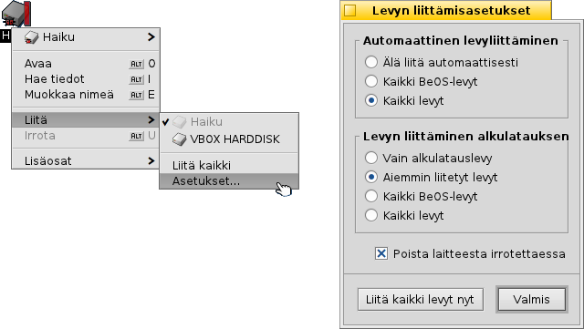
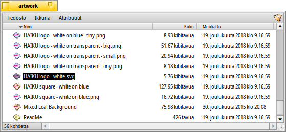
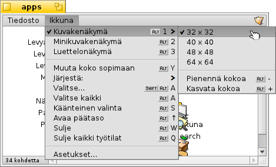
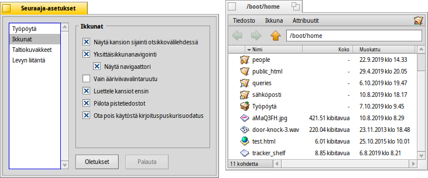
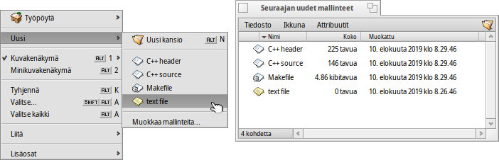
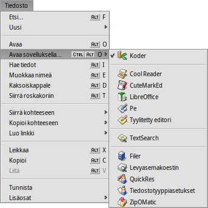
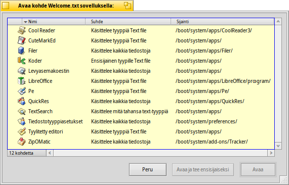
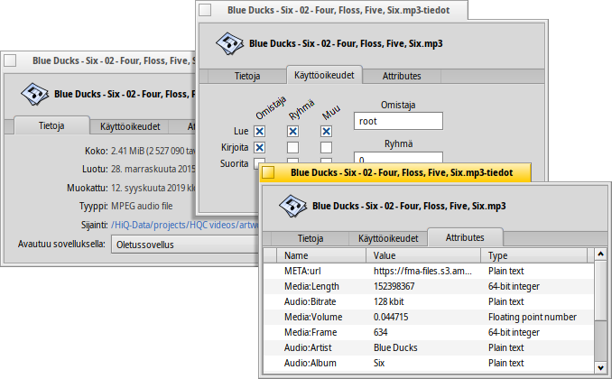
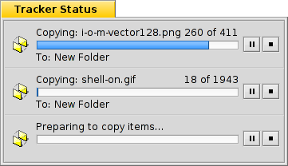

| Hakemisto |
|
Liitetään taltioita Navigoidaan Ulkoasu Seuraaja-asetukset Työskentely tiedostoilla Tapahtumatila |
Seuraaja
Seuraaja on graafinen käyttöliittymä kaikille tiedostoillesi. Se sallii sinun luoda uusia tiedostoja ja kansioita sekä löytää, käynnistää ja nimetä uudelleen samoin kuin kopioida tai poistaa olemassa olevia tiedostoja ja kansioita.
Koska kyseessä on vain muiden kaltainen sovellus (Työpöytä kuvakkeineen on vain taustalla oleva kokonäyttöikkuna), Seuraaja näkyy ikkunoineen Työpöytäpalkissa ja se voidaan sulkea ja käynnistää uudelleen. Helpoin tapa poistua tai käynnistää uudelleen kaatunut tai jäätynyt Seuraaja (tai kuriton Työpöytäpalkki) on Ryhmävalvonta-sovelluksen kutsuminen.
 Liitetään taltioita
Liitetään taltioita
Jotta käyttäjä pääsee käsiksi kiintolevyyn, CD-levyyn, USB-tikkuun jne., käyttäjän on ensin liitettävä taltio, toisin sanoen kerrottava järjestelmälle, että se on olemassa. Tämä tehdään avaamalla Työpöydälla tai jo liitetyn taltion (kuten alkulatauslevy) päällä hiiren kakkospainikkeella -alivalikon. Löydät saman alivalikon Työpöytäpalkin -valikosta.
Löydät myös valikon niin että sinun ei tarvitse liittää kaikkia manuaalisesti jokaisen alkulatauksen jälkeen.
Yllä oleva asetus liittää automaattisesti jokaisen tallennuslaitteen, jonka liität tai lisäät ja liittää alkulatauksen yhteydessä myös kaikki levyt, jotka oli liitetty aiemmin.
Navigoidaan
Kun oletuksena kaksoisnapsautat kansiota, Seuraaja avaa uuden ikkunan, mutta jättää ylemmän tason ikkunan avoimeksi. Tämä voi nopeasti johtaa työpöydän täyttymiseen ikkunoilla.
Voit estää tämä pitämällä alhaalla Alt Gr/OPT-painiketta, mikä sulkee automaattisesti ylemmän tason ikkunan.
Tämä pätee myös näppäinnavigoinnissa. Katso lisätietoja aiheesta Pikanäppäimet ja näppäinyhdistelmät.
Kansioiden läpi kulkeminen on yksi Seuraajien päätarkoitus aivan kuin tiedostohallinnoilla muilla alustoilla. Haikun Seuraajassa on joitakin ainutlaatuisia ominaisuuksia, jotka opastavat sen tehokkaaseen tekemiseen.
Siirrytään alas alivalikkoihin
Sen sijaan, että kaksoisnapsautellaan kansio kansiolta alaspäin kansioiden hierarkiapuussa, on olemassa parempi tapa siirtyä alaspäin:

Hiiren kakkospainikkeen napsauttaminen kansion päällä tuo näkyviin tavallisen asiayhteysvalikon, jonka ylimmäisenä on nykyisen kansion alivalikko, jonka antaa sinulle mahdollisuuden navigoida tason alaspäin. Siirrä hiiren kohdistinta vain alaspäin hierarkiassa, kunnes löydät tiedoston tai kansion, jota olet etsimässä ja avaa se napsauttamalla. Yllä näytetään kansion /boot/home/config/ sisältö.
Jos teet ylläkerrotun ollessasi raahaamassa tiedostoa, se siirretään sinne, minne sen mahdollisesti pudotat.
Samanlaista menetelmää voidaan käyttää mistä tahansa Seuraaja-ikkunasta:

Napsauta vasemmalla alhaalla olevaa aluetta, jossa on lueteltu kohteiden lukumäärä, ja saat näkyviin alivalikon, jossa näkyy kaikki nykyisen tason alapuolella olevat tasot. Sieltä voi kairautua alaspäin kansioiden lävitse kuten tavallisesti.
Huomaa, että Työpöytä on aina ylin taso, koska se on paikka, jossa Seuraaja näyttää liitetyt taltiot. Jos haluat vielä yhden levyaseman, sinun on ensin navigoitava ylimmäksi (Työpöydälle) ja hypätä siellä toiselle levylle.
Saat saman alivalikkonavigoinnin kun raahaat tiedostoa kansion päällä. Hiiren osoittimen pitäminen hetken kohteen päällä saa alivalikon ponnahtamaan näkyviin ja voit siirtyä alaspäin kohteeseesi. Jos aloita raahaamisen hiiren kakkospainikkeella, voit valita kopioinnin, siirtämisen tai tiedoston linkittämisen, joka toteutuu, kun päästät irti hiirellä.
Hypätään tiedostoihin nimeä kirjoitettaessa
Eräs konsepti on ehkä tuttu muiden käyttöjärjestelmiem tiedostohallinnasta: tiedostonimen muutaman ensimmäisen kirjaimen kirjoittaminen aiheuttaa hyppäämisen ensimmäiseen tiedostoon, jonka nimen alusta löytyvät nuo kirjaimet. Haiku vei idean askeleen pitemmälle. Jos kirjaimia ei löydy tiedoston nimen alusta, niin se hyppää ensimmäiseen tiedostoon, jossa kirjaimet ovat missä paikassa tahansa. Ja jos kirjaimia ei löydy tiedostonimestä, niin seuraavaksi etsitään tiedostojen attribuutit.
Yllä olevassa esimerkissä on useita tiedostoja, jotka alkavat "Haiku logo", renderoinnin yksinkertainen eteenpäin kirjoittaminen on aika tehotonta. Haikussa kirjaimet "web" kirjoittamalla hypätään juuri sen ensimmäiseen ilmentymään tiedostossa "Haiku logo - website". Kirjoittamasi kirjaimet ilmaantuvat vasempaan alakulmaan, jossa normaalisti löytyy tiedosto- ja hakemistokohteiden lukumäärä. Sekunti kirjainten kirjoittamisen jälkeen, näyttö hyppää takaisin normaalitilaan ja olet valmis kirjoittamaan uuden haun.
Nimenkirjoitussuodatus
Sen sijaan, että hypätään tiedostoon nimen kirjoittamisen yhteydessä, olemassa on myös valitsin, jolla voidaan suodattaa pois kaikki tiedostot, jotka eivät täsmää kirjoittamiisi merkkeihin. Tämä parantaa selvyyttä dramaatttisesti, erityisesti kansioissa, joissa on paljon tiedostoa. Käyttämällä näppäimiä VAIHTO VÄLILYÖNTI erottimena, voit kirjoittaa jopa useita merkkijonoja.
Päinvastoin kuin haun eteneminen kirjoittamisen aikana, suodatus jää toteutumatta kunnes painat näppäintä ESC tai suljet ikkunan (tai poistut kansiosta, jota olet käyttänyt yhden ikkunan navigoinnissa).
Tämä nimenkirjoitussuodatus asetetaan Seuraaja-asetuksissa.
Ulkoasu

Seuraaja-ikkunat tarjoavat kolme erilaista näkymätilaa -valikosta:
(ALT 1) - Suuret kuvakkeet, voit vaihtaa kokoa alivalikosta tai kasvattaa tai pienentää niiden kokoa näppäimillä ALT +/-.
(ALT 2) - Pienet kuvakkeet.
(ALT 3) - Tiedostojesi yksityiskohtainen luettelo, jossa voit näyttää tai piilottaa käytettävissä olevat tiedostoattribuutit (katso aihe Attribuutit.)
-valikko tarjoaa lukuisia muita funktioita:
(ALT Y) - Muuttaa ikkunan kokoa sen ihannekokoon.
- Käytettävissä vain Kuvake- tai minikuvakenäkymässä, alivalikko sallii lajittelujärjestyksen asettamisen seuraaviin ominaisuuksiin:
, , , , , , ,
- Kääntää lajittelujärjestyksen päinvastaiseksi
(ALT K) - Tasaa kaikki kuvakkeet näkymättömän rasteriin. Pidä alhaalla näppäintä VAIHTO ja valikoksi tulee , mikä lisäksi lajittelee kaikki kuvakkeet yllä valitun kriteerin mukaisesti.
(VAIHTO ALT A) - Valitse tiedostot säännöllisten lausekkeiden mukaisesti.
(ALT W) - Sulkee ikkunan. Pidä alhaalla VAIHTO-näppäin ja valikoksi tulee , joka sulkee jokaisen Seuraaja-ikkunan.
(ALT Q) - Sulkee jokaisen Seuraaja-ikkunan nykyisessä työtilasssa. Hyödyllinen pikanäppäin, jos unohdat pitää alhaalla Alt Gr/OPT-näppäintä kun napsauttelet kansion läpi ja kaikki yhä auki olevat Seuraaja-ikkunat sotkevat työtilaasi.
Joskus haluat vain järjestää muutaman kuvakkeen tekemättä täydellistä (ALT K). Valitse siinä tapauksessa nämä kuvakkeet ja aloita raahaamaan niitä niiden uuteen sijaintipaikkaan. Ennen kuin pudotat ne sinne, pidä näppäin ALT painettuna. Tämä tasaa kuvakkeet näkymättömään rasteriin.
Loput funktioista ovat aika itsestäänselviä, siirrytään Seuraaja-asetuksiin.
Seuraaja-asetukset
avaa paneelin, joka tarjoaa lukuisia asetuksia jotka, missä ei ole ilmeistä, pitäisi tulla selväksi yhdellä yrityksellä. Koska kaikki asetukset toteutetaan välittömästti, näet muutokset heti.
Joten lyhyesti ei niin ilmeiset asetukset:
- Päättää, että ilmaantuvatko liitetyt levyt suoraan Työpöydälle vai ikkunaan sen jälkeen kun napsautetaan yhtä Työpöydällä olevaa Levy-kuvaketta.
- Voit asettaa , toisin sanoen kansion kaksoisnapsauttaminen ei avaa sitä omaan ikkunaan, vaan jo avoimen ikkunan sisälle, korvaten ylemmän tason kansionäkymän. Tämä ei ole sama kuin napsauttaminen samalla kuin pidetään Alt Gr/OPT-näppäintä, kuten yllä kuvattiin, koska menetät ikkunakohtaisen tallennetun sijainnin ja koon.
Ennen yhden ikkunan navigointitilaan vaihtamista, koska se voi tuntua sinusta tutumpaa, suosittelemme ensin kokeilemaan valikkoperustaista selaamista, koska se voi itse asiassa olla paljon nopeampaa, kun siihen vain tottuu. Toisaalta yhden ikkunan navigointi tarjoaa Navigaattorin, jossa voit kirjoittaa tai kopioida ja liittää polkunimen sekä käyttää paluu-, eteenpäin- ja ylöspäin -painikkeita.
Activoimalla Seuraaja-ikkuna sisältö suodatetaan samalla kun kirjoitat näyttäen vain tiedostonimet tai kaikki parhaillaan näytetyt attribuutit, jotka täsmäävät merkkijonoosi. Katso yllä.
- Aseta vapaan tilan valinnaisen indikaattorin väri, joka näytetään levykuvakkeen vieressä.
- Määritä milloin ja mitkä levyt liitetään automaattisesti "Liitetään taltioita".
Tämä paneeli on muuten käytettävissä myös Seuraajassa Työpöytäpalkin -valikosta.
Työskentely tiedostoilla
Kun kutsutaan valitun tiedoston kautta, useimmat -valikon komennoista tarjotaan myös asiayhteysvalikosta hiiren kakkospainikkeen napsautuksella tuohon tiedostoon.
Kuten tavallista, komennot ovat aika selviä.
- Etsi tiedosto tai kansio. Katso lisätietoja aiheesta Kysely.
- Luo uuden kansion tai minkä tahansa muun tiedostoon perustuvan mallinteen.
Valitsemalla avataan kansio /boot/home/config/settings/Tracker/Tracker New Templates. Luomalla tiedoston tuohon kansioon tarjotaan tiedostotyyppiä tiedostonimellä ja muilla attribuuteilla valikossa . Tässä siinä on tiedosto "Text" tiedostotyypillä text/plain. Katso lisätietoja aiheesta Tiedostotyypit.
- Alivalikko tarjoaa kaikki sovellukset, jotka voivat käsitellä tätä tiedostotyyppiä.
Ensisijainen sovellus, joka avautuu hiiren kaksoisnapsautuksella, on merkitty aktiiviksi. Tämä alivalikko luettelee ensin ne sovellukset, jotka pystyvät käsittelemään tarkalleen tiedostotyyppiä, tässä tapauksessa tekstitiedostoa, tyyppi text/plain. Seuraavaksi tulee kaikki sovellukset, jotka voivat käsitellä yleensä ylempää tyyppiä, here text/*. Viimeisenä luettelossa on ne sovellukset, jotka voivat käsitellä mitä tiedostoa tahansa. Jos et napsauta sovellusta alivalikossa, vaan sen sijaan valikkoriviä , avautuu paneeli:
Tässä löydät taas alivalikossa luetellut sovellukset. Valitsemalla yhden ja napsauttamalla painiketta , vaihdat ensisijaisen sovelluksen jokaiselle tuon tiedostotyypin tiedostolle, tässä text/plain.
-
Tämä avaa paneelin, joka näyttää tiedoston metatiedot ja sallii sinun muokata tiedoston käyttöoikeuksia. Voit nimetä tiedoston uudelleen napsauttamalla tiedoston nimeä ylhäällä.
Paneeli sisältää kolme välilehteä:
- : Näyttää vakiotiedot, kuten koon, luomis-/muokkauspäivämäärän, tiedostotyypin ja sijainnin. Sijaintipolun napsauttaminen avaa tiedostojen isäntäkansion. -valikko asettaa ensisijaisen sovelluksen tämän tietyn tiedoston avaamiseen.
- : Sallii sinun vaihtaa omistajaa, ryhmää ja tiedoston käyttöoikeuksia.
- : Luettelee kaikki lisäattribuutit niiden arvoineen ja tyyppeineen.
, ja - sallivat sinun nimetä uudelleen tiedoston tai tehdä siitä kaksoiskappaleen tai laittaa valitut tiedostot roskakoriin.
, ja - sallivat sinun siirtää, kopioida tai linkittää valittuja tiedostoja käyttäen alivalikon navigointimenetelmää. Pitämällä kutsuttaessa näppäintä VAIHTO alhaalla valikko tarjoaa valitsimen suhteellisen linkin luomiseen.
, ja - sallii sinun leikata, kopioida ja liittää tiedostoja leikepöytää käyttäen. Pitämällä näppäintä VAIHTO alhaalla kutsuttaessa valikkoa voit tiedostoja, ehkä jostain toisesta kansiosta, jotka voit liittää jonnekin muualle myöhemmin. Pitämällä näppäintä VAIHTO alhaalla voit liittää kopioidut tiedostot leikepöydälle linkkeinä.
- nuuskii ja asettaa tiedostojen tyypin, jos niillä ei ole tyyppiä aiemmin, esimerkiksi jos siirrät tiedoston sovelluksella wget, joka ei aseta itse tiedostotyyppiä. Pitämällä näppäintä VAIHTO alhaalla valikko kutsuttaessa riviksi vaihtuu , joka tunnistaa tiedostotyypin ja korjaa sen, jos se oli aiemmin väärä.
- tarjoaa sinulle kaikki yleiset Seuraaja-lisäosat ja ne, jotka osaavat käsitellä valittuja tiedostoja. Katso lisätietoja aiheesta Seuraaja-lisäosat.
Tapahtumatila
Kun kopioit, siirrät ja poistat tiedostoja, Seuraaja näyttää edistymisen tilaikkunassa. Jos aloitat useamman kuin yhden tapahtuman, jokainen työ saa oman tilanäytön.
Oikealla on kaksi painiketta tapahtuman tauottamiseksi tai pysäyttämiseksi kokonaan. Joskus voi olla hyödyllistä tilapäisesti pysäyttää laaja tapahtuma. Sinun on ehkä esimerkiksi käynnistettävä laajempi sovellus. Suuren tietomäärän kopioiminen tukkii kiintolevysi siirtokaistanleveyden ja siten viivyttää työkulkuasi.